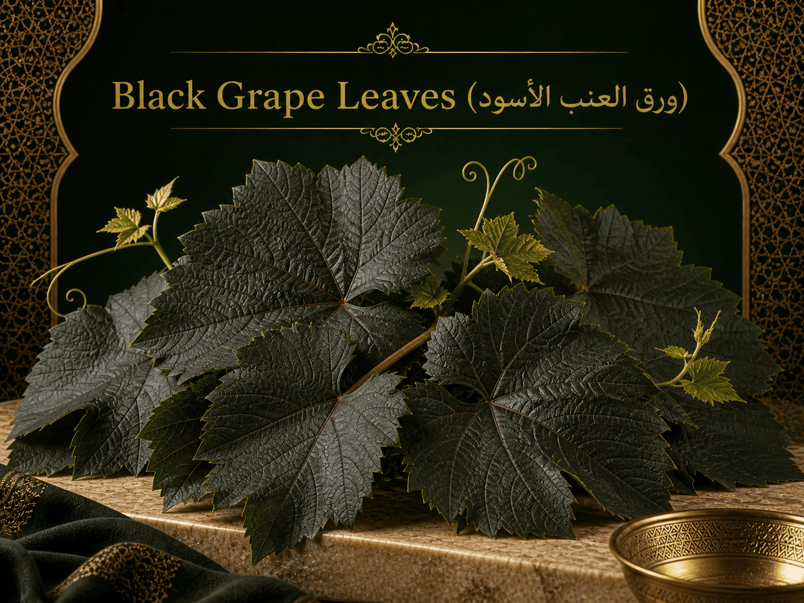
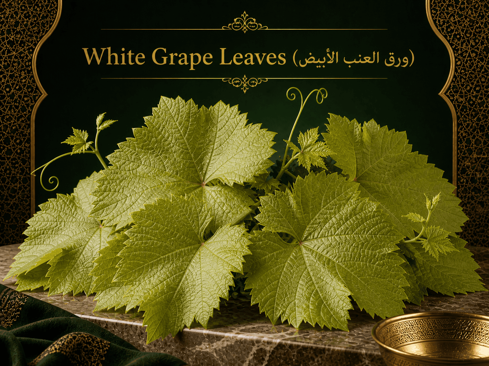

Grape Vine Leaves
Baladi Store offers grape vine leaves from Palestine. They are used for making stuffed grape leaves, one of the most popular traditional dishes in Palestine.

Types of Grape Vine Leaves
Black Leaves (الورق البلدي / الأسود)

Price: 12 USD per jar
This type is darker in color and thicker than the white type. It can handle longer cooking time. It has a soft texture and a more sour taste. It is usually more expensive than the white type.
White Leaves (الورق الأبيض)

Price: 9 USD per jar
This type is lighter in color and less sour. It has a soft but slightly firm texture, with medium-thick leaves. It is usually cheaper than the black type.
Specifications
| Attribute | Details |
|---|---|
| Product Name | Grape Vine Leaves |
| Brand | Baladi Store |
| Origin | Hebron, Palestine |
| Available Types | Black Leaves, White Leaves |
| Black Leaves Price | 12 USD per jar |
| White Leaves Price | 9 USD per jar |
| Package Type | Glass jar |
| Use | Cooking stuffed grape leaves |
Customer Ratings and Reviews
Overall Rating: 4.9 out of 5
Review by Aisha
The leaves were soft and easy to roll.
Review by Yousef
Good quality and nice taste.
Review by Maria
A nice Palestinian product with clean packaging.